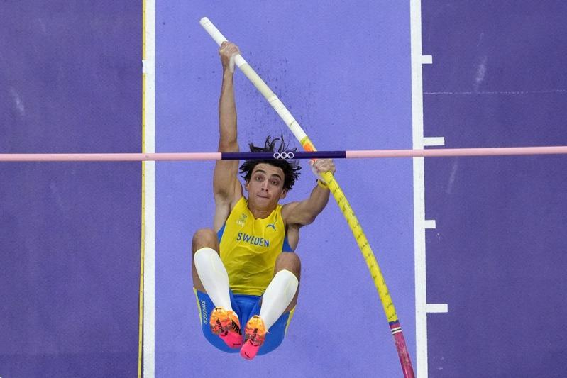
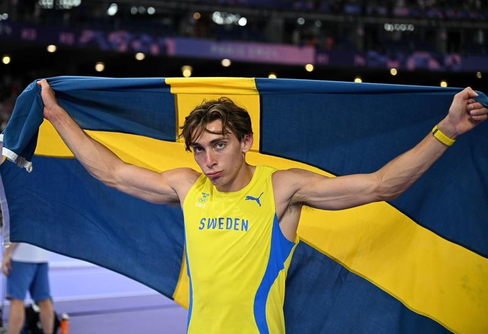

「瑞典飞人」杜普兰提斯（Armand Duplantis）将巴黎奥运化身一个人的武林，飞越6公尺时他就确定蝉联男子撑竿跳金牌，接续他先跳过6公尺10、改写奥运纪录，之后更挑战6公尺25成功，在超过8万人的法兰西体育场缔造新猷。
原世界纪录是杜普兰提斯今年4月钻石联赛厦门站跳出的6公尺24，在奥运殿堂挑战突破自己，他前两跳都顺利过杆，但手都触碰到横杆而失败；第三跳在全场屏息中漂亮完成，杜普兰提斯都惊喜跳起，在全场欢呼中冲到场边和女友亲吻庆祝。

这已是杜普兰提斯第9次改写世界纪录，但在奥运舞台体验特别不同，「我还没意识到这一刻是多美妙，这是其中一件感觉没那么真实的事情，有点像是灵魂出窍的经验。」
「我能说什么？我在奥运破了世界纪录，在可能是撑竿跳选手的最大舞台，当我还是孩子时，最大梦想就是在奥运打破世界纪录。」杜普兰提斯提到，不但完成儿时梦想，且是在最疯狂的观众面前，成为全场焦点，如此体验前所未有。
杜普兰提斯挑战世界纪录时，连对手都一起拍手，和全场见证特别时刻。杜普兰提斯也是全场唯一跳过6公尺的选手，美国肯德里克斯（Sam Kendricks）以5公尺95摘银，希腊卡拉利斯（Emmanouil Karalis）以5公尺90镀铜。
巴黎奥运热话题
- 麟洋配赛后大合照 李洋「1句话」逗笑马来西亚选手
- 与约克维奇打到抢7落败 阿尔卡拉斯：我有过机会
- 30岁生日礼物 中国刘洋夺金 想吃三鲜馅饺子
- 中国男子混泳接力摘金 打破美60年不败纪录
- 选手村太热没冷气 意大利金牌索性去公园睡觉